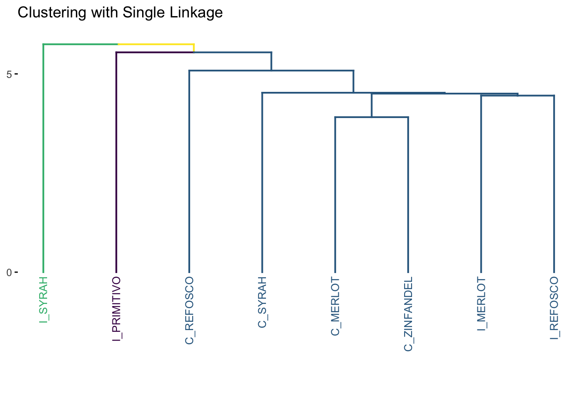
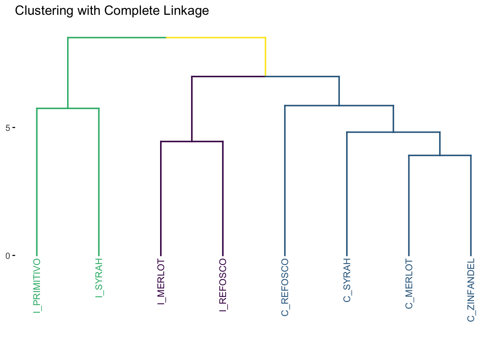
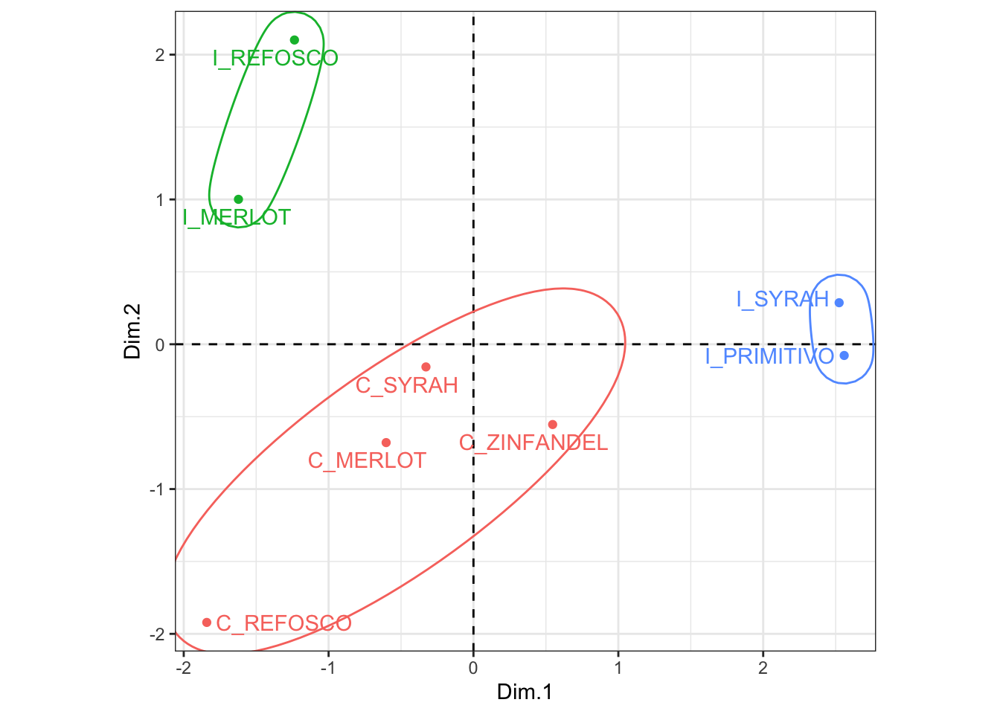

Chapter 7 Cluster analysis
The goal of any cluster analysis is to find groups (“clusters”) of observations that are “close to” each other in some sense, so as to reveal underlying structure in the data: typically, we would want to know that groups of more than one observation are very “close” so that we can speak about the group instead of the original observations. In most sensory evaluation, “close” is usually taken to mean “similar”, as the definitions of “close” we will operationalize are based on the sensory descriptors, so that observations that are “close” to each other will, in some sense, have similar sensory profiles.
We could also use cluster analysis to explore possible hypotheses, if we have some hypotheses about the underlying group structure that exists–for example, if we think that wines made from the same grape would be more similar to each other, we’d expect those wines to show up in the same group. We’ll explore this more as we look at our results.
We start by loading our results, as before. We will also define a tibble of product means, which will be our main data input to start with.
library(tidyverse)
library(here)
library(factoextra) # this is new
# I've decided to use the `across()` syntax instead of the scoped mutate_*()
# functions, for documentation check out ?across()
descriptive_data <- read_csv(here("data/torriDAFinal.csv")) %>%
mutate(across(1:3, ~as.factor(.)))
descriptive_means <-
descriptive_data %>%
group_by(ProductName) %>%
summarize(across(where(is.numeric), ~mean(.)))We’re going to mostly use the built in stats::hclust() function for most of this workflow, but do know that this is the simplest (and perhaps not best) clustering tool available in R. It will do for our purposes.
In the R Opus, HGH scales the mean data to have zero-means and unit-variance. This choice (it is not necessary for calculation) means that all descriptors will have equal impact on our estimates of proximity for the purpose of clustering. We’ll follow along.
descriptive_means_scaled <-
descriptive_means %>%
# This line is desnse - notice the "lambda" ("~") function that uses multiple
# references to the same column: we are subtracting the column mean and
# dividing by the column sd for each column.
mutate(across(where(is.numeric), ~ (. - mean(.)) / sd(.)))Now we’re ready to think about “close”. As the word implies, we’re going to examine the distances among all of our products. The built in function in R to calculate distance is stats::dist(). This will serve our purposes well.
descriptive_distance <-
descriptive_means_scaled %>%
# We need to remember to move our variable column to the "rownames" attribute
# so that the older function keeps it (and doesn't try to find distances
# between character vectors)
column_to_rownames("ProductName") %>%
dist(method = "euclidean")
descriptive_distance## C_MERLOT C_REFOSCO C_SYRAH C_ZINFANDEL I_MERLOT I_PRIMITIVO
## C_REFOSCO 5.083950
## C_SYRAH 4.525147 5.472269
## C_ZINFANDEL 3.909011 5.856348 4.817566
## I_MERLOT 4.503404 6.405151 6.153529 6.522035
## I_PRIMITIVO 6.129930 7.853063 5.998705 5.543431 7.842528
## I_REFOSCO 6.272963 6.992652 5.408757 6.917554 4.452965 8.514098
## I_SYRAH 6.911105 8.427799 6.359281 6.170264 7.546229 5.747512
## I_REFOSCO
## C_REFOSCO
## C_SYRAH
## C_ZINFANDEL
## I_MERLOT
## I_PRIMITIVO
## I_REFOSCO
## I_SYRAH 7.537424The dist() function produces a lower-triangular matrix of the distances between each pair of mean vectors. Because we selected method = "euclidean" the distance is calculated as the typical (L2) norm: the square-root of the the sum of the squared differences between each attribute mean for the two products. Other common options are available, see ?dist.
Technically, all (mathematical) distances must fulfill 4 properties:
- For any object, \(dist(a,a) = 0\) (the distance of an object to itself is always 0)
- For all pairs of objects, \(dist(a,b) ≥ 0\) (all distances are positive or 0)
- For any pair of objects, \(dist(a,b) = dist(b,a)\) (distane is symmetric)
- For any three objects, \(dist(a,b) + dist(b,c) ≥ dist(a,c)\) (the triangle inequality - I like the Wikipedia description as “intermediate objects can’t speed you up”)
Enough about distance! Let’s get on with it. We can see that our distance matrix is all positive entries that give us some idea of “how close” each pair of objects is. Smaller numbers indicate proximity.
7.1 Hierarchical clustering on distances
One of the major families of clustering is called “hierarchical” clustering (HCA: Hierarchical Clustering Analysis). In plain language, hierarchical methods are iterative methods that start with the assumption that each object (sample) starts in its own group and then, for each step in the process, the two “closest” objects are merged into a group. Different strategies for calculating distance (between the merged groups, as we will typically stick with Euclidean distance as our base metric for singlets) and different methods for making the merge define the different hierarchical clustering approaches.
In the original R Opus, HGH demonstrates 4 different HCA methods. We’ll look at each briefly.
7.1.1 Ward’s Method
Ward’s Method is probably the most commonly used (and intellectually satisfying approach). For Ward’s method, to quote Rencher (2002, 466):
Ward’s method, also called the incremental sum of squares method, uses the within cluster (squared) distances and the between-cluster (squared) distances… Ward’s method joins the two clusters A and B that minimize the increase in [the difference between the new AB cluster’s within-distance and the old A and B within-distances].
Ward’s method, qualitatively, tends to find balanced clusters that result from the merge of smaller clusters.
Note that the original R Opus used method = "ward"–according to the documentation in ?hclust:
Two different algorithms are found in the literature for Ward clustering. The one used by option “ward.D” (equivalent to the only Ward option “ward” in R versions ≤ 3.0.3) does not implement Ward’s (1963) clustering criterion, whereas option “ward.D2” implements that criterion (Murtagh and Legendre 2014). With the latter, the dissimilarities are squared before cluster updating. Note that agnes(, method=“ward”) corresponds to hclust(, “ward.D2”).
We’re going to use the factoextra::fviz_dend() function for drawing our clusters. Long-story-short, the native ggplot2 functions for plotting tree- and graph-like structures like “dendrograms” (the tree plots that are common for HCA results) don’t really exist, and fviz_dend() is going to do a lot of heavy lifting for us in the background by giving us a basic dendrogram ggplot2 object that we can alter as we see fit using more familiar syntax.
p_ward <-
p_ward +
# Stretch out the y-axis so that we can see the labels
expand_limits(y = -6) +
# Clean up the messiness
labs(title = "Clustering with Ward's method", y = NULL) +
scale_color_viridis_d()
p_wardNotice that we had to tell the program (in this case fviz_dend()) how many groups we wanted to label separately (k = 3). We’re following HGH here. In general, while there are methods for attempting to determine the “right” number of groups from HCA, this involves “researcher degrees of freedom” (i.e., “good judgment”).
7.1.2 Single linkage
Single linkage is also called “nearest neighbor” clustering. In single-linkage, the key element is that the distance between any two clusters \(A\) and \(B\) is defined as the minimum distance between a point \(a\) in \(A\) and a point \(b\) in \(B\). Single linkage is, therefore, “greedy”, because big clusters will tend to get bigger: there is a greater chance that a large cluster will have a small distance between some point within it and another point outside it.
We can use the same number of groups (k = 3) so we can have a consistent comparison among the methods.
p_single <-
cluster_single %>%
fviz_dend(k = 3, cex = 2/3) +
expand_limits(y = -6) +
scale_color_viridis_d() +
labs(y = NULL, title = "Clustering with Single Linkage")
p_single
Notice the “greediness”: large single group keeps adding a single new observation at each step of the algorithm, resulting in this characteristic “step” pattern. For most situations, single linkage is a not a recommended approach for clustering.
7.1.3 Complete Linkage
The complete linkage approach is just the opposite of the single linkage method: the distance between two clusters is the maximum distance between all two points \(a\) and \(b\) in clusters \(A\) and \(B\), respectively. With this definition, the same iterative approach is carried out and the two closest clusters are merged at each step.
cluster_complete <-
descriptive_distance %>%
hclust(method = "complete")
p_complete <-
cluster_complete %>%
fviz_dend(k = 3, cex = 2/3) +
expand_limits(y = -6) +
labs(y = NULL, title = "Clustering with Complete Linkage") +
scale_color_viridis_d()
p_complete
Intuitively, complete linkage avoids the “greediness” problem of single linkage. It is the default method used in hclust(): see ?hclust.
7.1.4 Average Linkage
As the name implies, in the average linkage method, the distance between two clusters is defined as the average distance between all objects \(a_i\) in \(A\) and all objects \(b_j\) in \(B\).
7.1.5 Comparing methods
Let’s look at the results of our cluster analyses side by side.
Only single linkage gives us very different results; the others are a matter of scaling. This could be quite different if we had a larger number of more dissimilar objects - recall our distance matrix:
## C_MERLOT C_REFOSCO C_SYRAH C_ZINFANDEL I_MERLOT I_PRIMITIVO
## C_REFOSCO 5.083950
## C_SYRAH 4.525147 5.472269
## C_ZINFANDEL 3.909011 5.856348 4.817566
## I_MERLOT 4.503404 6.405151 6.153529 6.522035
## I_PRIMITIVO 6.129930 7.853063 5.998705 5.543431 7.842528
## I_REFOSCO 6.272963 6.992652 5.408757 6.917554 4.452965 8.514098
## I_SYRAH 6.911105 8.427799 6.359281 6.170264 7.546229 5.747512
## I_REFOSCO
## C_REFOSCO
## C_SYRAH
## C_ZINFANDEL
## I_MERLOT
## I_PRIMITIVO
## I_REFOSCO
## I_SYRAH 7.537424Not actually that much variation!
We can do the same thing with our individual observations.
individual_distances <-
descriptive_data %>%
unite(NJ, ProductName, NR, col = "ID") %>%
mutate(across(where(is.numeric), ~ (. - mean(.)) / sd(.))) %>%
column_to_rownames("ID") %>%
dist()
clusters_individual <-
individual_distances %>%
hclust(method = "ward.D2")
# Here we drop the original unique IDs for just the ProductName
clusters_individual$labels <- str_extract(clusters_individual$labels, "[A-Z]_[A-Z]+")
p <- clusters_individual %>%
fviz_dend(cex = 1/4,
k = 8,
label_cols = clusters_individual$labels %>% as.factor() %>% as.numeric()) +
labs(title = "Clustering raw data with Ward's method") +
scale_color_viridis_d()
pWe tried looking for 8 clusters (since there are 8 wines) and giving each label (the individual row observation representing a single judge rating a single wine sample) the color of the rated wine. It is obvious that the wines don’t cluster together based on their sample ID.
7.2 Using cluster IDs
Above we played a little bit to see if, for the raw data, clustering provided a structure that mirrored product ID. But that was more for demonstration purposes than because it was a good data-analysis practice. More standard in sensory evaluation workflow would be to conduct a clustering analysis and then determine whether that cluster “explained” sensory variation in the base data.
From our original clustering results, we can pull out a tibble that tells us which sample belongs to which cluster:
# We use `cutree()` with `k = 3` to get 3 groups from the "tree" (clustering)
groups_from_ward <-
cluster_ward %>%
cutree(k = 3) %>%
as_tibble(rownames = "ProductName") %>%
rename(ward_group = value) %>%
# It will be helpful to treat group membership as a nominal variable
mutate(ward_group = factor(ward_group))
# The `dplyr::left_join()` function matches up the two tibbles based on the
# value of a shared column(s): in this case, `ProductName`
descriptive_data <-
descriptive_data %>%
left_join(groups_from_ward)
glimpse(descriptive_data)## Rows: 336
## Columns: 24
## $ NJ <fct> 1331, 1331, 1331, 1331, 1331, 1331, 1331, 1331, 1400, …
## $ ProductName <chr> "C_MERLOT", "C_SYRAH", "C_ZINFANDEL", "C_REFOSCO", "I_…
## $ NR <fct> 7, 7, 7, 7, 7, 7, 7, 7, 7, 7, 7, 7, 7, 7, 7, 7, 7, 7, …
## $ Red_berry <dbl> 5.1, 5.6, 4.9, 5.0, 3.3, 5.7, 2.9, 3.2, 0.1, 1.6, 4.5,…
## $ Dark_berry <dbl> 5.8, 1.9, 2.6, 1.9, 7.2, 3.6, 5.1, 6.0, 0.1, 0.7, 2.9,…
## $ Jam <dbl> 2.1, 3.9, 1.4, 7.8, 0.5, 8.7, 8.7, 4.0, 0.2, 0.0, 0.3,…
## $ Dried_fruit <dbl> 4.7, 1.2, 5.9, 0.6, 5.8, 1.9, 0.4, 0.7, 2.9, 6.4, 2.4,…
## $ Artificial_frui <dbl> 1.0, 7.9, 0.8, 6.6, 0.7, 7.4, 6.2, 4.1, 0.1, 0.1, 0.1,…
## $ Chocolate <dbl> 2.9, 1.0, 2.0, 6.4, 2.1, 3.3, 3.4, 3.6, 0.2, 1.0, 0.2,…
## $ Vanilla <dbl> 5.0, 8.3, 2.7, 5.5, 1.3, 6.9, 8.1, 4.8, 2.0, 0.8, 1.9,…
## $ Oak <dbl> 5.0, 2.3, 5.6, 3.6, 2.1, 1.5, 1.8, 2.6, 3.0, 5.4, 6.1,…
## $ Burned <dbl> 1.4, 1.8, 1.9, 3.2, 5.6, 0.2, 0.4, 4.7, 7.5, 5.1, 0.3,…
## $ Leather <dbl> 2.3, 3.5, 4.3, 0.3, 6.5, 1.5, 4.1, 6.5, 0.7, 0.8, 0.2,…
## $ Earthy <dbl> 0.6, 1.0, 0.6, 0.2, 4.7, 0.3, 0.5, 1.9, 0.7, 3.0, 1.3,…
## $ Spicy <dbl> 3.2, 0.7, 1.4, 2.9, 0.7, 3.1, 0.7, 1.4, 0.3, 3.2, 3.1,…
## $ Pepper <dbl> 5.4, 3.0, 4.1, 0.9, 2.8, 1.6, 3.6, 4.5, 0.1, 2.0, 0.9,…
## $ Grassy <dbl> 2.1, 0.6, 3.6, 1.8, 3.8, 0.9, 2.3, 0.8, 0.1, 1.3, 0.4,…
## $ Medicinal <dbl> 0.4, 2.2, 1.7, 0.2, 2.6, 0.5, 0.2, 3.8, 0.1, 2.1, 0.1,…
## $ `Band-aid` <dbl> 0.4, 0.4, 0.1, 0.2, 5.1, 1.2, 0.2, 6.2, 0.1, 1.1, 0.1,…
## $ Sour <dbl> 5.0, 9.7, 7.8, 8.3, 7.6, 7.2, 5.9, 6.3, 5.7, 6.4, 5.4,…
## $ Bitter <dbl> 5.9, 5.2, 3.5, 3.0, 1.9, 9.8, 2.9, 0.2, 0.6, 2.9, 0.1,…
## $ Alcohol <dbl> 9.0, 7.2, 4.7, 8.9, 2.8, 8.7, 1.6, 7.0, 1.6, 5.4, 4.9,…
## $ Astringent <dbl> 8.7, 8.3, 5.0, 7.8, 5.9, 8.0, 2.6, 4.2, 5.5, 5.1, 5.9,…
## $ ward_group <fct> 1, 1, 1, 1, 2, 3, 3, 2, 1, 1, 1, 1, 2, 3, 3, 2, 1, 1, …Now we have a factor identifying which cluster (from an HCA with Ward’s Method and 3 groups) each wine belongs to. We can use this structure as a new possible input for M/ANOVA, like we did in MANOVA (Multivariate Analysis of Variance).
cluster_manova <-
manova(formula = as.matrix(descriptive_data[, 4:23]) ~ ward_group,
data = descriptive_data)
# We get a "significant" 1-way MANOVA result for the effect of cluster
# membership on overall sensory profile.
summary(cluster_manova, test = "W")## Df Wilks approx F num Df den Df Pr(>F)
## ward_group 2 0.52896 5.8867 40 628 < 2.2e-16 ***
## Residuals 333
## ---
## Signif. codes: 0 '***' 0.001 '**' 0.01 '*' 0.05 '.' 0.1 ' ' 1# Let's review how to use nest() and map() functions to tidily apply 1-way ANOVA
# to each variable.
descriptive_data %>%
# We are going to ignore (marginalize) reps and judges and even products
select(-NR, -NJ, -ProductName) %>%
pivot_longer(-ward_group,
names_to = "descriptor",
values_to = "rating") %>%
nest(data = -descriptor) %>%
# run 1-way ANOVAs
mutate(anova_results = map(.x = data,
.f = ~aov(rating ~ ward_group, data = .))) %>%
# use broom::tidy() to get tibble-ized summaries out of the `aov` objects
transmute(descriptor,
tidy_summary = map(anova_results, broom::tidy)) %>%
unnest(everything()) %>%
filter(term != "Residuals",
p.value < 0.05) %>%
mutate(across(where(is.numeric), ~round(., 3))) %>%
print(n = 13)## # A tibble: 13 × 7
## descriptor term df sumsq meansq statistic p.value
## <chr> <chr> <dbl> <dbl> <dbl> <dbl> <dbl>
## 1 Red_berry ward_group 2 49.7 24.9 3.97 0.02
## 2 Dark_berry ward_group 2 81.5 40.8 5.54 0.004
## 3 Jam ward_group 2 243. 122. 23.7 0
## 4 Artificial_frui ward_group 2 134. 66.9 18.7 0
## 5 Chocolate ward_group 2 20.6 10.3 3.41 0.034
## 6 Vanilla ward_group 2 59.6 29.8 7.74 0.001
## 7 Oak ward_group 2 37.5 18.8 4.89 0.008
## 8 Burned ward_group 2 106. 53.1 13.7 0
## 9 Leather ward_group 2 70.2 35.1 8.90 0
## 10 Earthy ward_group 2 20.0 10.0 4.18 0.016
## 11 Grassy ward_group 2 16.6 8.28 4.07 0.018
## 12 Medicinal ward_group 2 109. 54.4 14.7 0
## 13 Band-aid ward_group 2 96.5 48.3 12.4 0We find that 13 descriptors have significantly different means for the 3 different clusters. This seems to contradict HGH’s results–she found 7 in the original R Opus. I am not quite sure what the difference could be here; when I reran the code from the actual original R Opus my results match the tidy workflow shown above (not shown). I wonder if some data got lost somewhere in the original?
7.3 K-means clustering
In hierarchical clustering, we use an iterative process to merge our items into groups–if we let the process run long enough we end up with a single group. We decide on the “right” number of groups by examining results like the dendrogram produced from the set of merges throughout the process (e.g., we apply cutree(k = 3)).
If we had some idea a priori of how many groups we were expecting, we could use some alternative processes. The most popular–and possibly intuitive–of these is k-means clustering. The \(k\) in “k-means” stands in for the same thing it does in the k = argument in cutree(): how many groups are we looking for. However, in k-means clustering, we don’t proceed hierarchically. Instead, we start with some initial \(k\) “seeds” - the initial 1-item groups. These can be chosen at random or purposively, although if the former it is important to note that the choice of seed can be influential on the solution, and so multiple runs of k-means clustering may produce different results.
Once the \(k\) seeds are chosen, every other item that is to be clustered is assigned to the group for which it is closest to the seed (again, “closest” can be defined by any distance metric). Once a group has more than 1 item, its centroid (the “mean” in the name “k-means”) replaces the initial seed for distance measurements. After an initial run, it is possible that items are in the “wrong” group–that a new, different group centroid is closer to them than is their current group centroid. These items are re-assigned, centroids are re-calculated, and the procedure iterates until no items are re-assigned. This reassignment is not possible with hierarchical methods, and so k-means can sometimes find better results. As might be imagined, different choices of methods for calculating centroid and for distance can affect the results of k-means clustering.
A common workflow is to use HCA to get an idea of the appropriate \(k\) for k-means clustering, and then to use k-means clustering to get a final, optimized clustering solution. We will take this approach, using k = 3.
clusters_kmeans <-
descriptive_means_scaled %>%
column_to_rownames("ProductName") %>%
kmeans(centers = 3)
clusters_kmeans$cluster## C_MERLOT C_REFOSCO C_SYRAH C_ZINFANDEL I_MERLOT I_PRIMITIVO
## 3 3 3 3 2 1
## I_REFOSCO I_SYRAH
## 2 1## # A tibble: 3 × 21
## cluster Red_berry Dark_berry Jam Dried_fruit Artificial_frui Chocolate
## <chr> <dbl> <dbl> <dbl> <dbl> <dbl> <dbl>
## 1 1 1.34 1.29 1.49 0.0234 1.58 0.179
## 2 2 -0.423 -0.629 -0.729 0.255 -0.544 -1.07
## 3 3 -0.456 -0.328 -0.379 -0.139 -0.515 0.444
## # ℹ 14 more variables: Vanilla <dbl>, Oak <dbl>, Burned <dbl>, Leather <dbl>,
## # Earthy <dbl>, Spicy <dbl>, Pepper <dbl>, Grassy <dbl>, Medicinal <dbl>,
## # `Band-aid` <dbl>, Sour <dbl>, Bitter <dbl>, Alcohol <dbl>, Astringent <dbl>HGH shows how to replicate the same workflow as we did above with the HCA results: using the group assignments to run a 1-way M/ANOVA to determine which attributes vary significantly. I am going to leave this as an exercise to the reader, but we’ll instead look at how we might visualize these results, since we can’t draw a dendrogram in the same way as an HCA.
We’ll first run a simple means PCA to get the product score plot, and then we’ll draw some hulls around the groups.
means_pca <-
descriptive_means %>%
column_to_rownames("ProductName") %>%
FactoMineR::PCA(scale.unit = FALSE, graph = FALSE)
# Join the PCA scores to the k-means cluster IDs
p1 <-
means_pca$ind$coord %>%
as_tibble(rownames = "ProductName") %>%
left_join(
clusters_kmeans$cluster %>%
as_tibble(rownames = "ProductName")
) %>%
mutate(value = factor(value)) %>%
# And plot!
ggplot(aes(x = Dim.1, y = Dim.2)) +
geom_hline(yintercept = 0, linetype = 2) +
geom_vline(xintercept = 0, linetype = 2) +
geom_point(aes(color = value)) +
ggrepel::geom_text_repel(aes(color = value, label = ProductName)) +
ggforce::geom_mark_ellipse(aes(color = value)) +
theme_bw() +
coord_equal() +
theme(legend.position = "none")
p1
Looks like those California wines end up grouped together even though there is a fair bit of spread. I looked into the PC3 to see if that explained it, but they are even more spread there (not shown–see if you can make the small code tweak to do so). I think this is a case where arguably 3 clusters is not a good solution. We might consider examining some measures of cluster fit, perhaps through something like the NbClust package, to determine if we should consider other solutions.
7.4 Packages used in this chapter
## R version 4.3.1 (2023-06-16)
## Platform: aarch64-apple-darwin20 (64-bit)
## Running under: macOS Ventura 13.6.1
##
## Matrix products: default
## BLAS: /Library/Frameworks/R.framework/Versions/4.3-arm64/Resources/lib/libRblas.0.dylib
## LAPACK: /Library/Frameworks/R.framework/Versions/4.3-arm64/Resources/lib/libRlapack.dylib; LAPACK version 3.11.0
##
## locale:
## [1] en_US.UTF-8/en_US.UTF-8/en_US.UTF-8/C/en_US.UTF-8/en_US.UTF-8
##
## time zone: America/New_York
## tzcode source: internal
##
## attached base packages:
## [1] stats graphics grDevices utils datasets methods base
##
## other attached packages:
## [1] patchwork_1.1.2 factoextra_1.0.7 here_1.0.1 lubridate_1.9.2
## [5] forcats_1.0.0 stringr_1.5.0 dplyr_1.1.2 purrr_1.0.1
## [9] readr_2.1.4 tidyr_1.3.0 tibble_3.2.1 ggplot2_3.4.3
## [13] tidyverse_2.0.0
##
## loaded via a namespace (and not attached):
## [1] tidyselect_1.2.0 viridisLite_0.4.2 farver_2.1.1
## [4] viridis_0.6.4 fastmap_1.1.1 tweenr_2.0.2
## [7] digest_0.6.33 timechange_0.2.0 estimability_1.4.1
## [10] lifecycle_1.0.3 cluster_2.1.4 multcompView_0.1-9
## [13] magrittr_2.0.3 compiler_4.3.1 rlang_1.1.1
## [16] sass_0.4.7 tools_4.3.1 utf8_1.2.3
## [19] yaml_2.3.7 knitr_1.43 ggsignif_0.6.4
## [22] labeling_0.4.3 htmlwidgets_1.6.2 bit_4.0.5
## [25] scatterplot3d_0.3-44 abind_1.4-5 withr_2.5.0
## [28] grid_4.3.1 polyclip_1.10-4 fansi_1.0.4
## [31] ggpubr_0.6.0 xtable_1.8-4 colorspace_2.1-0
## [34] emmeans_1.8.7 scales_1.2.1 MASS_7.3-60
## [37] flashClust_1.01-2 cli_3.6.1 mvtnorm_1.2-2
## [40] rmarkdown_2.23 crayon_1.5.2 generics_0.1.3
## [43] rstudioapi_0.15.0 tzdb_0.4.0 cachem_1.0.8
## [46] ggforce_0.4.1 parallel_4.3.1 vctrs_0.6.3
## [49] jsonlite_1.8.7 carData_3.0-5 bookdown_0.37
## [52] car_3.1-2 hms_1.1.3 bit64_4.0.5
## [55] rstatix_0.7.2 ggrepel_0.9.3 FactoMineR_2.8
## [58] dendextend_1.17.1 jquerylib_0.1.4 glue_1.6.2
## [61] DT_0.28 stringi_1.7.12 gtable_0.3.4
## [64] munsell_0.5.0 pillar_1.9.0 htmltools_0.5.6
## [67] R6_2.5.1 rprojroot_2.0.3 vroom_1.6.3
## [70] evaluate_0.21 lattice_0.21-8 highr_0.10
## [73] backports_1.4.1 leaps_3.1 broom_1.0.5
## [76] bslib_0.5.1 Rcpp_1.0.11 coda_0.19-4
## [79] gridExtra_2.3 xfun_0.39 pkgconfig_2.0.3